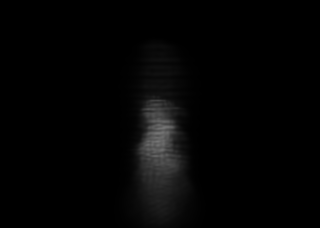

Exact R160 smoke body under one matched Beer-Lambert model
All roles use camera sha256:52d62666d901cd0fbdbc11d5658ae3f40fd035b404cf4aaab674cab2837a4d7e, explicit extinction coefficient 0.731, and beer-lambert-one-minus-exp-negative-depth-v0. PNGs use the same display-only 8x exposure; metrics and float artifacts remain linear. Dense and connected roles integrate the exact physical-body grid. The Gaussian role integrates each 3D covariance along the finite camera ray, converts cell-sum mass to world-volume mass, and uses an explicit Mahalanobis-64 candidate window. This is an isolated optical falsifier, not the production compositor.
dense-direct Exact physical smoke-body scalar sampled trilinearly from the full grid. Max depth 0.052210; nonzero pixels 31172.connected-sparse-grid Every positive physical-body cell preserved with explicit six-neighbor connected-component identity. Max depth 0.052210; nonzero pixels 31172.

analytic-gaussian R2/R4 Gaussian mass and full covariance integrated in closed form over each finite camera-ray segment. Max depth 0.058819; nonzero pixels 30234.